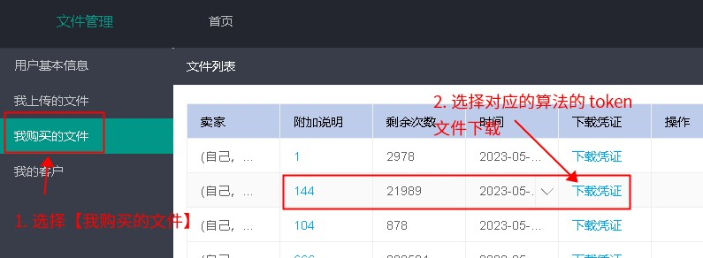
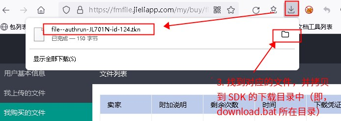

4.3. What Manufacturers Need to Do
4.3.1. Apply for an account
If you do not yet have a multi-algorithm authorization server account, first contact your algorithm provider and ask them to help you obtain one. For more information, see Using the Jieli Server
4.3.2. Negotiate and assign the Authroization_ID
Agree on an Authroization_ID with each algorithm company you use, avoiding ID conflicts (that is, the IDs of the algorithms must not repeat)
Within one SDK, this ID must not be duplicated
The ID must be in the range 64 to 999
For example, suppose manufacturer user-C needs to use the algorithms of algorithm companies algo-A and algo-B in the same SDK.
Then they must be given different IDs; for example, the ID of algo-A can be 0x1 and that of algo-B 0x2.
4.3.3. Integrate and call the library files provided by the algorithm companies
Once the algorithm company has finished developing the algorithm, it provides a .a library file containing the corresponding algorithm functions. You need to integrate the .a library file into your SDK so that you can call the functions in these algorithm library files.
If you are not sure how to integrate third-party library functions, see How to Add a Third-Party Library to an SDK Project.
After the algorithm company's algorithm library has been integrated into the SDK, the SDK cannot run the algorithm library properly unless the chip has been authorized.
You then need to add the algorithm credential files to the FW and program the chip once with the programmer, using the FW that contains the credential files. While programming the chip, the programmer authorizes it. Once programming succeeds, the chip authorization is complete.
The credential file is the file with which the programmer requests authorized programming from the multi-algorithm authorization server. For more information, read the sections below.
4.3.4. Download the credential file
After providing the algorithm library, the algorithm company sells you authorized counts through the Jieli multi-algorithm authorization server.
Once the algorithm company has successfully sold you authorizations, you can see the number of counts sold on the Jieli multi-algorithm authorization server.
Log in to the server with your multi-algorithm authorization server account.
Under [My purchased files] (我购买的文件), you can see the authorizations you have purchased. Under [Download credential] (下载凭证), download the corresponding credential file (i.e., the
.tknfile). This credential file (i.e., the.tknfile) contains theAuthroization_ID, the authorization data size and other information, which are used to check for conflicts when the FW file is generated.
Because the actual .authrun file cannot be given directly to the manufacturer who generates the final FW file, a credential file is needed as a layer of isolation
Note that this credential file (i.e., the .tkn file) does not contain the actual file content; its purpose is to tell the programmer to fetch the file and the authorization from the server during deployment


4.3.5. Generate the FW file
When building the FW file, specify the credential files of all algorithms used in this SDK. To do so, modify the isd_config.ini file in the download directory, then run download.bat to regenerate the fw/ufw file.
This involves four steps:
Find the location of the download directory, i.e., the directory where
isd_config.iniis locatedCopy the
.tknfiles downloaded in the previous step to the download directory
(i.e., the working directory of isd_download.exe, which is usually the directory containing isd_config.ini or one of its subdirectories; check the download.bat script for the exact location)Modify the
isd_config.inifile accordingly
Note
Note:
1. If isd_config.ini is generated from the isd_config.c file, also modify isd_config.c, so that your changes to the isd_config.ini file are not overwritten by the next build.
2. Some models (see Chip models supported by the programmer for multi-algorithm authorization) require isd_download version 4.2.54 or later, and the following fields must be configured in isd_config.ini:
[EXTRA_CFG_PARAM]
OTP_CFG_SIZE=512;
3. The SDK of the fw file must support the multi-algorithm function; see Add authorization data verification to the algorithm library (.a file).
If the SDK reports the link error sys_cfg_read_otp undefined, update the corresponding patch as described in SDK patches that support multi-algorithm authorization; if you cannot find a patch, follow Requesting a multi-algorithm authorization patch.
Otherwise, the multi-algorithm authorization function does not take effect after programming
# Modify the corresponding ini configuration to specify the tkn files
# In this example, the algorithms of two algorithm companies are used
# file-fileVbOtr4aFOpxuXTkd20221020093416.tkn
# file-fileX6cwshC2yDJIqA2p20221020093439.tkn
# These are the two corresponding credential files
[FW_ADDITIONAL]
FILE_LIST=(file=ota.bin:type=100),\
(file=file-fileVbOtr4aFOpxuXTkd20221020093416.tkn:type=0xec),\
(file=file-fileX6cwshC2yDJIqA2p20221020093439.tkn:type=0xec)
# Note:
# 1. Nothing may follow the \ character at the end of a line, not even spaces
# 2. The characters (:,)\ must all be half-width English characters (remember to switch the input method)
# 3. Do not add a comma , after the last list element
Run
download.batin the download directory to regenerate the fw/ufw file
4.3.6. Deploy the FW file
When the FW file is deployed in the factory and the file is found to require authorization, a connection is made to the Jieli server to deduct authorized counts and authorize the chips.
Note
If there are multiple authorization bin files, the authorized count is the smallest of their remaining counts.
If the [Log in to fmfile.jieliapp.com] (登录到fmfile.jieliapp.com) window shown below does not pop up, there are two possible reasons:
The
.tknfiles were not added when the fw/ufw you are deploying was generated.Your programmer version is too old (2.27.4 or later is required)


Note
If the following error pops up: [No machine code available] (没有可用的机器码)

There are several possible reasons:
The hardware version of your programmer is too old and the hardware must be replaced. Contact the place where you bought the programmer to have it replaced (hardware version V5.2 or later is required; see Introduction to the programmer main unit and Programming Third-Party Data (Authentication Codes)).
You may have used too many machine codes, so no spare machine codes are available. Remove some machine codes as described in Reclaim unused authorized counts below.
4.3.7. Reclaim unused authorized counts
Sometimes some authorized counts may remain unused in a programmer. These counts can be reclaimed to the server and then allocated to other programmers.